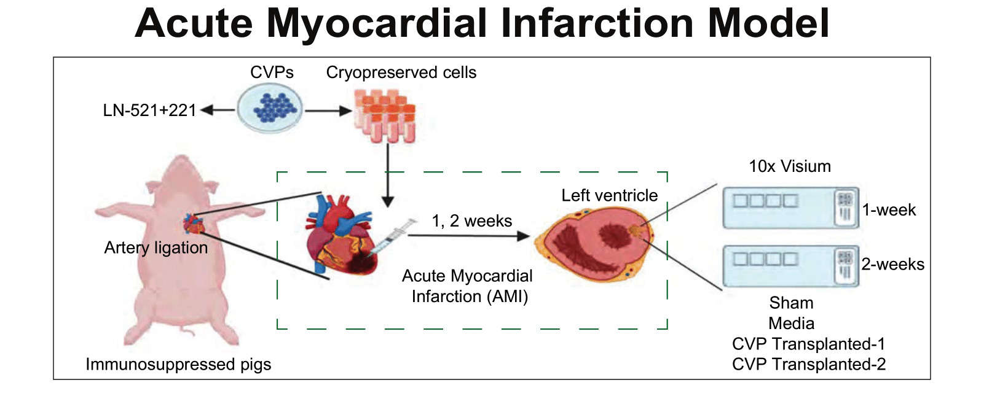
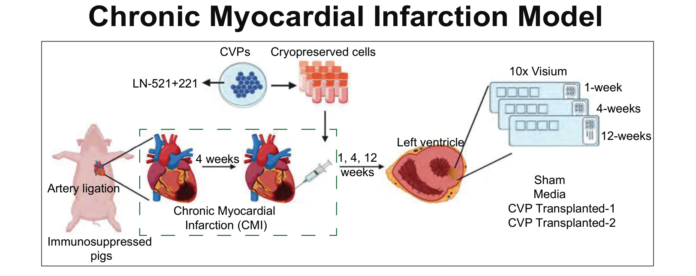

Resources
Pig-human xeno-graft MI model spatial transcriptome atlas
The human pluripotent stem cells derived cardiovascular progenitors (CVPs) differentiated on the laminin 521+221 matrix were transplanted them into acute and chronic Myocardial Infarcted (MI) pig hearts (AMI and CMI). The time-series spatial transcriptomes were generated to characterize these human CVP cells at AMI 1- and 2- and at CMI 1-, 4- and 12 weeks post-transplantation. The AMI and CMI transcriptome atlas is provided in this shiny app.

